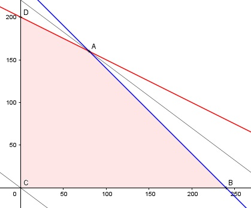

Aufgabe 89 Eine Fabrik verkauft das Bauteil A für 15 000 €, das Bauteil B für 10 000 €. Pro Tag können entweder 15 Bauteile A oder 30 Bauteile B hergestellt werden. Wieviele Bauteile A oder B wird sie in 240 Tagen herstellen, wenn möglichst hohe Gesamteinnahmen erzielt werden sollen, und sie maximal 6 000 Bauteile absetzen kann? Bedingungen: x = Anzahl Tage, an denen Bauteil A gebaut wird y = Anzahl Tage, an denen Bauteil B gebaut wird 15x + 30y ≤ 6 000 x + y ≤ 240 x > 0 x ∈ ℕ y > 0 y ∈ ℕ Zielfunktion: E = 15 * 15 000x + 30 * 10 000y Randgerade 1: 15x + 30y = 6 000 Randgerade 2: x + y = 240

Die Eckpunkte A, B, C und D bilden das Planungsgebiet, das alle Ungleichungen erfüllt. Eckpunkt A ist der Schnittpunkt der Randgeraden 1 und 2: 15x + 30y = 6 000 (1) x + y = 240 (2) Aus (2): x + y = 240 |-x y = 240 - x Eingesetzt in (1): 15x + 30 * (240 - x) = 6 000 15x + 7 200 - 30x = 6 000 |+15x - 6 000 15x = 1 200 |:15 x = 80 Eingesetzt in (2): y = 240 - 80 = 160 A(80|160) Die Parallele der Zielfunktion E liegt in A am höchsten --> Von Bauteil A werden 80 * 15 = 1 200, von Bauteil B 30 * 160 = 4 800 hergestellt. Die Einnahmen betragen: E = 225 000 * 80 + 300 000 * 160 = 66 000 000 €